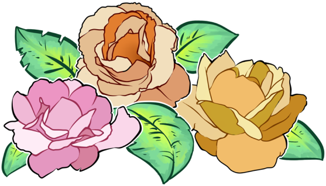

Glitch Art
We basically had to take a picture and change the code in a text edit software and put them all together to make a GIF. I love dogs the most out of anything so that's probably going to be a returning theme for me if it's possible. I used an HP laptop so I had to use the Wordpad program to change the text of the image. It was a little hard at first because mine would lag out but after awhile it worked. Then we combined all the images to make a GIF on photoshop.